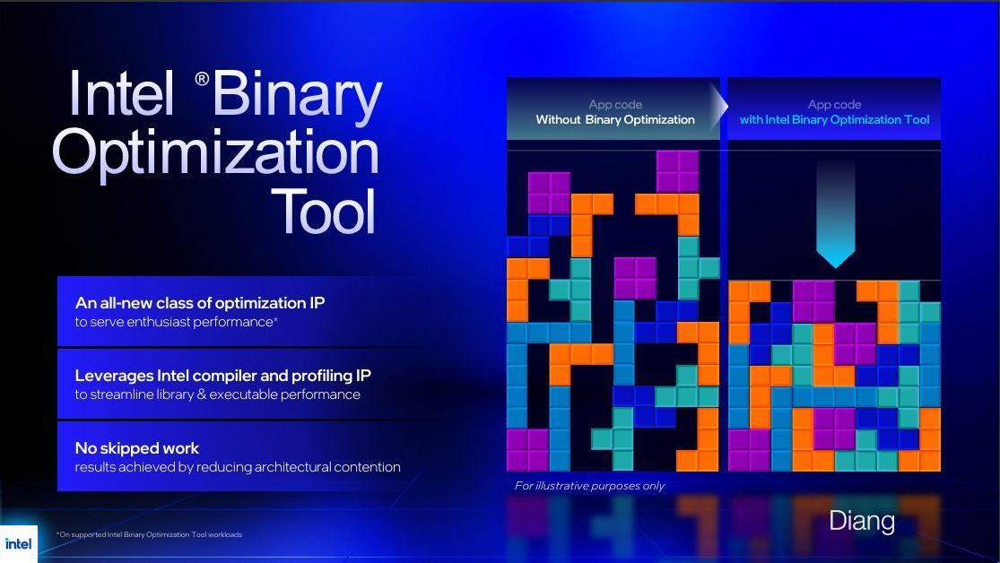
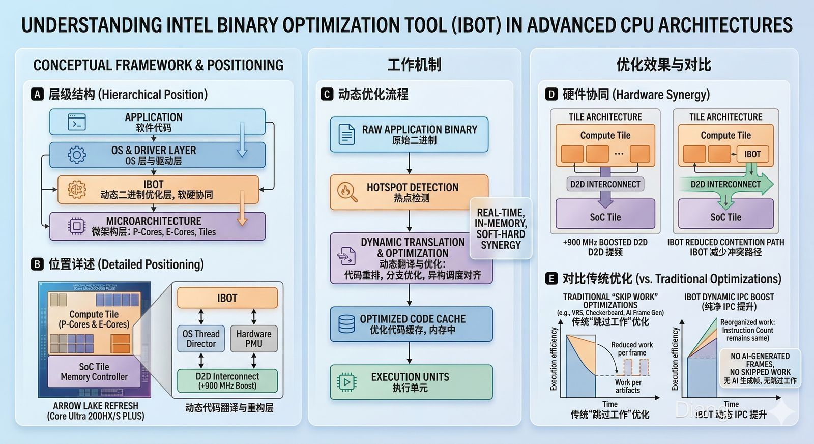

从Intel Binary Optimisation Tool (IBOT) 看高性能计算发展方向
Arrow Lake Refresh 改了哪里
Intel 的 Arrow Lake Refresh，也就是 Core Ultra 200S PLUS CPUs，保留核心架构，微调频率，把 D2D 互连频率最多提高 900 MHz，并支持 DDR5-7200。除此之外，这一代还加入了 Intel Binary Optimisation Tool（IBOT）。
相比频率变化，我更关心 IBOT 怎样改善指令执行、提高负载 IPC。

什么是IBOT？
制程微缩和增加核心数，无法独自解决异构架构里的执行低效。AI 负载带来的能源压力，以及 AI 进入个人终端的需求，也让能效成为更直接的约束。软件怎样使用现有硬件，值得单独看。
IBOT 是动态二进制优化层，介入的是程序运行时。
传统编译器在运行前优化；IBOT 则在系统底层观察指令流，定位低效代码，再按 Arrow Lake 微架构重写。
表 1：编译器优化与 IBOT 的区别
| 特性 | 编译器优化 | iBot 底层优化 |
|---|---|---|
| 作用对象 | 源代码（C++/C# ） | 编译后的二进制文件（.exe / .dll） |
| 获取信息 | 静态语法树、数据流分析 | 实际运行时的分析数据 (Profiling Data) |
| 针对性 | 针对指令集架构（如 x86-64） | 针对特定微架构（如流水线深度解码宽度等） |
| 典型手段 | 循环展开、函数内联、寄存器分配 | 代码块重排、去除无效指令、优化指令对齐 |
| 灵活性 | 开发者控制，发布后即固定 | 用户侧控制，可针对新发布的 CPU 进行二次优化 |
它要减少的是停顿（Stalls），让同样的周期完成更多工作。
IBOT 的核心运作机制
按运行过程，可以分为观测、变换和减少争用。
Profiling 利用性能监控单元（PMU）定位瓶颈，区分分支预测失败、Cache Miss 等问题，再找出相关代码。
Dynamic Transformation 在内存中调整二进制指令，例如替换低效序列，或重排读取次序，使它更适应当前架构与总线带宽。
Contention Reduction 关注资源争用。Arrow Lake 分 Tile 后，数据要在不同逻辑单元间往返，优化指令流的目的之一，就是减少这种等待。
D2D 带宽为什么影响运行时优化
Core Ultra 200S 采用与 AMD Chiplet 相似的分块思路，通过 Foveros 3D 封装连接各 Tile。Compute Tile 负责计算，SoC Tile 负责内存控制，核心访问内存需要经过两者之间的边界。
D2D 频率影响跨模块传输效率。初代 200S 的内存延迟在 80ns–100ns，而上一代约在 60ns 级别，跨 Tile 通信是这笔延迟账的一部分。
Compute Tile 的 Ring Bus 与 D2D 频率存在同步或比例关系。较低的 D2D 频率也会牵制环形总线，影响 L3 带宽与响应。
运行时优化器也要监测和重写指令，会占用互连带宽。若基础通信已经紧张，优化本身的开销就更难忽略。
我把最多 900 MHz 的 D2D 提频理解为给 IBOT 留出运行空间：先改善基础通信，再处理指令层面的低效。
一方面，跨模块传输更快，基础延迟下降，也增加了可供优化器使用的带宽。后台分析与重写，仍要靠这套互连完成数据交换。
另一方面，IBOT 通过重排跨片取数相关指令，减少 Architectural Contention，让执行节奏更贴近 D2D 能提供数据的速度。
图 1：IBOT 的机制链。D2D 提频先释放带宽，PMU Profiling 定位瓶颈，动态重写减少指令气泡。
性能收益应该看在哪里
我更关注帧时间和单位周期吞吐的变化。
游戏

旧架构游戏、对单核效率敏感的游戏，以及 Switch/PS5 移植作，是这里关注的负载。IBOT 对指令流的优化，目标包括改善 1% Low FPS。
DLSS、FSR 的 Frame Generation 和 Upscaling 可以提高呈现帧数，但我对这种视觉补偿的兴趣不大。相比之下，我更想看 CPU 能否缩短原生计算花掉的时间。
IBOT 调整二进制执行，不增加生成帧，也不跳过原有必要计算。
异构核心上，旧作和移植游戏可能无法高效分配任务，留下无效周期。IBOT 试图在二进制层面重排指令，减少这类停顿。
帧生成仍会保留底层计算中的卡顿；IBOT 针对的正是这部分。我的期待是原生帧时间更均匀、响应随实际计算提速改善，而不只看画面最后显示了多少帧。
专业负载
生产力任务里，我关注 P-Core 与 E-Core 迁移时的抖动，以及跨 Tile 取数能否更稳定。
代码编译和大型工程加载可能频繁迁移核心。P/E 核微架构不同，切换可能触发流水线清空；IBOT 通过二进制指令预对齐来减少相关开销。
跨 Tile 访问则依靠预取和重排序，尽量用其他工作覆盖 D2D 等待，稳定非线性负载的单位周期吞吐。
对没有针对异构架构优化的旧专业软件，这相当于在运行时补一层适配，让执行方式更接近当前 Tile 结构。
我更想看执行效率，而非标称频率
Core Ultra 200S PLUS 把 D2D 提频与运行时二进制优化放在了一起。
前者改善模块间通信，后者重新安排软件使用资源的方式。硬件与软件分别处理一部分等待，才有机会让新增资源进入实际工作。
对游戏，我会盯住 1% Low FPS 和原生帧的响应；对专业软件，则看吞吐与执行抖动。
这些变化，比单独多出多少 MHz 更能说明这套方案的作用。
